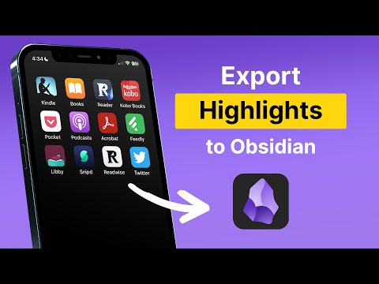
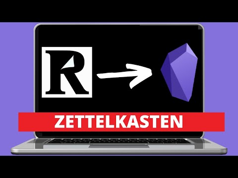
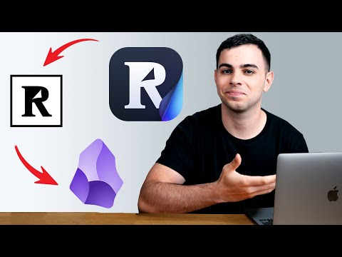

Guide - Readwise
Getting your reading into the vault
Readwise collects everything you highlight, from Kindle, articles, PDFs, newsletters and even paper books, and the Readwise plugin in Obsidian writes all of it into a Readwise/ folder in your vault. That folder is where Winnow picks it up. Setting it up is three things: an account, your reading sources, and one Connect button in Obsidian. Maybe fifteen minutes, most of it waiting for Kindle to sync.
1 - Account
Get the invite link first
Message Sean for his invite link before you sign up. It gives you both an extra free month on top of the normal 30-day trial, and it only works if you use it when creating the account.
After the trial it's $5.59 to $9.99 a month on yearly billing depending on the plan, or $12.99 for the full plan billed monthly (readwise.io/pricing). Yearly means one charge a year, which is easy to forget about. Students and people in academia get 50% off, and there are discounts for some countries, if you email Readwise and ask.
2 - Your reading
Connect wherever you already read
Everything here starts from the Import page in your Readwise account. Connect the ones you actually use and skip the rest, you can add more any time.
Kindle browser extension
Pick Kindle on the Import page and install the Readwise extension it offers (Chrome or Firefox on a computer). It reads your highlights from Amazon's notebook page, so check that your books show up at read.amazon.com/notebook first. Documents you sent to your Kindle yourself don't sync this way; for those, upload the
My Clippings.txtfile from the Kindle instead (how).Articles, newsletters, PDFs, YouTube Reader
Reader is Readwise's read-later app and comes with the same account. Save things into it with the browser extension or the share sheet on your phone, forward newsletters to your Reader email address, and highlight as you read. YouTube videos open with a transcript you can highlight too. Everything you highlight in Reader goes to Readwise on its own.
Paper books Readwise phone app
Take a photo of the page in the Readwise app and mark the passage, and it becomes a highlight like any other.
Everything else Import page
Apple Books, Kobo, Instapaper, Pocket and a long list of others are on the same Import page, each with its own one-time connect step (full list).
The note you type on a highlight comes into the vault together with it, and for Winnow it's the most useful part. A highlight is someone else's sentence; a line saying why it caught you is yours, and that's what Claude can turn into a candidate.
3 - Obsidian
One Connect button
The Readwise Official plugin is already installed and switched on in the starter vault, so there's nothing to download.
Open the plugin settings Obsidian
Settings (gear, bottom left) - Community plugins - Readwise Official - Options.
Connect and sign in browser
Click Connect. A browser tab opens on Readwise, you sign in and allow access, and it sends you back to Obsidian.
Run the first sync Obsidian
Click Initiate Sync. A
Readwise/folder appears in the vault with one note per book or article. The first sync of a big library takes a few minutes.Set it to sync on its own Obsidian
By default it syncs when Obsidian opens. In the same Options screen you can make it check every 1, 12 or 24 hours instead.
Two things to leave alone. Don't rename the files in Readwise/, because the plugin will just make a new copy under the old name. And the sync only adds, it never overwrites, so editing a highlight in Readwise later won't change the note that's already in the vault. Kindle, Instapaper and Pocket only sync to Readwise a few times a day, so a highlight from this morning can take a while to show up.
Videos and docs
Other people explaining it better
These are a few years old, so the plugin screens look a bit different now, but the steps haven't really changed.

How to Export Your Highlights to Obsidian
Readwise, the official walkthrough of the plugin

How to process notes in Obsidian
Nicole van der Hoeven, on what to do with highlights once they arrive

How I Capture & Process using Readwise & Obsidian
FromSergio, a whole reading setup built around Reader
Readwise's own docs
- How the Obsidian export works, including the formatting options
- Importing highlights, every source they support
- Kindle in detail, for when a book doesn't show up